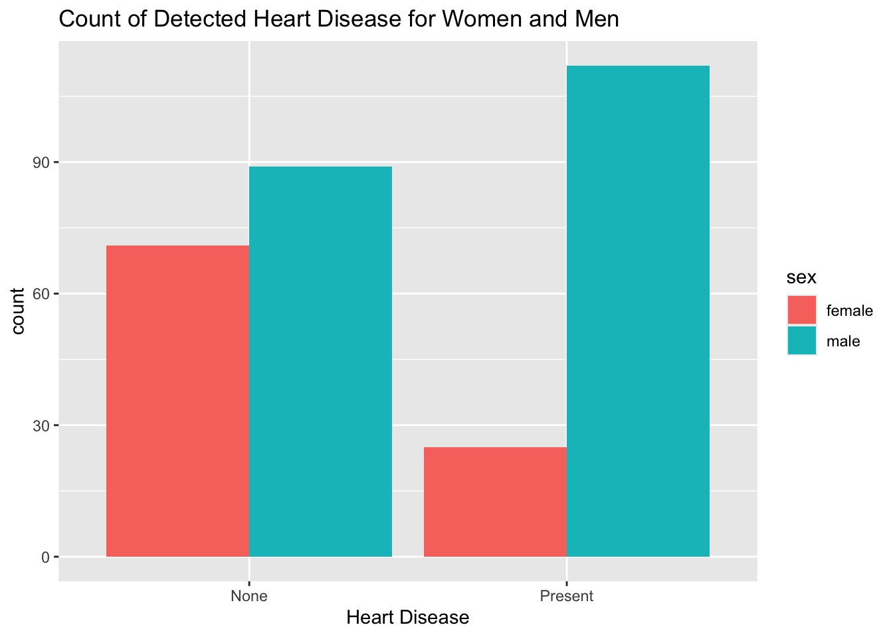
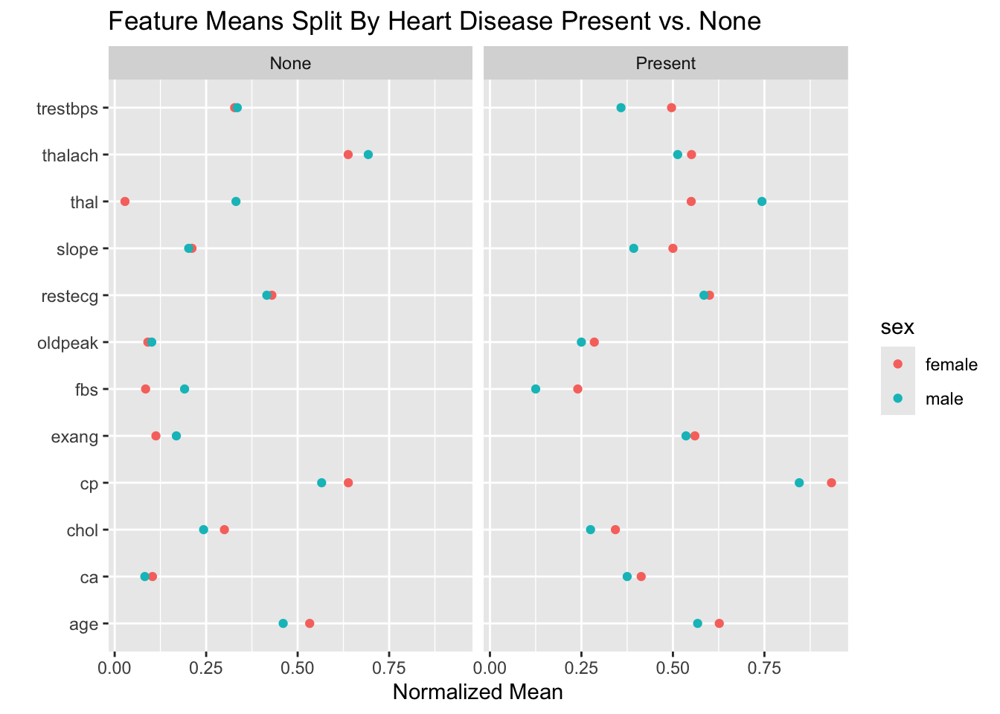
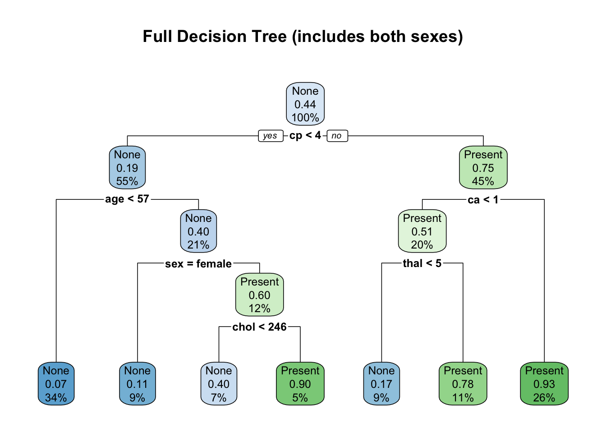
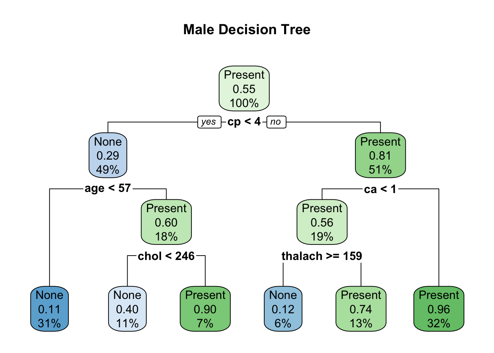
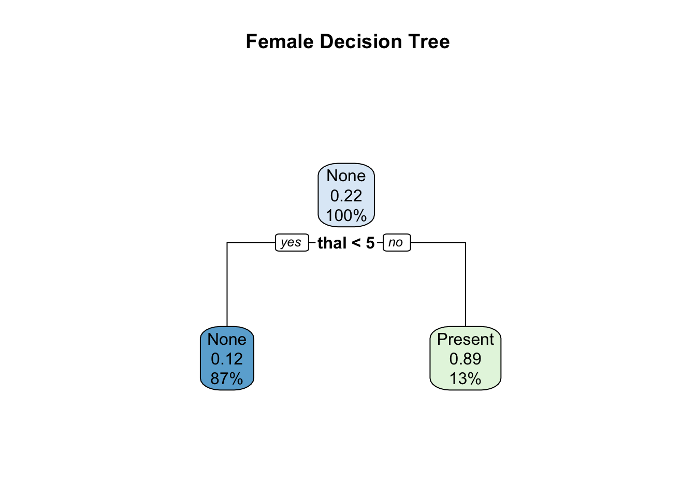

packages <- c("tidyr", "readxl", "dplyr", "magrittr", "purrr",
"ggplot2", "stringr", "snakecase", "knitr", "caret",
"rpart", "rpart.plot")
invisible(lapply(packages, require, character.only = TRUE ))Heart Disease Indicators by Sex
EDA
Healthcare
R
ML
Introduction
Heart disease is a leading cause of mortality worldwide, yet significant gender disparities exist in its study and treatment. Historically, research has predominantly focused on male patients, resulting in diagnostic and treatment protocols that do not fully address the unique ways in which heart disease manifests in women. This oversight has led to a critical gap in our understanding and care of heart disease in women.
The original data can be found here. I have already saved it as a csv file and will be accessing this file. Mutliple researchers have explored this data and gotten good predictions on the data!
The goal of this project is to explore how sex plays a role in heart disease indicators. By doing so, we aim to provide medical professionals with deeper insights into the early indicators of heart disease and ensure that sex-specific factors are considered for improved diagnosis and treatment.
To get started lets read in the data and take a look at the first 5 rows.
df_raw <- read.csv("data/heart_disease.csv")
kable(df_raw[1:5,], caption = "Raw Data")| age | sex | cp | trestbps | chol | fbs | restecg | thalach | exang | oldpeak | slope | ca | thal | num |
|---|---|---|---|---|---|---|---|---|---|---|---|---|---|
| 63 | 1 | 1 | 145 | 233 | 1 | 2 | 150 | 0 | 2.3 | 3 | 0 | 6 | 0 |
| 67 | 1 | 4 | 160 | 286 | 0 | 2 | 108 | 1 | 1.5 | 2 | 3 | 3 | 2 |
| 67 | 1 | 4 | 120 | 229 | 0 | 2 | 129 | 1 | 2.6 | 2 | 2 | 7 | 1 |
| 37 | 1 | 3 | 130 | 250 | 0 | 0 | 187 | 0 | 3.5 | 3 | 0 | 3 | 0 |
| 41 | 0 | 2 | 130 | 204 | 0 | 2 | 172 | 0 | 1.4 | 1 | 0 | 3 | 0 |
na_cols <- names(which(colSums(is.na(df_raw)) > 0))
print(na_cols)[1] "ca" "thal"The data consists of 14 columns, including num which is our heart disease number. Two of these columns have NA values: ca and thal. Lets clean up the data and start exploring what we have.
Data Cleaning and Initial Observations
First, let’s label the data in an easier way to understand for num (heart disease), and sex.
# Add yes/no heart disease column
# Label sex as male/female for convenience
df <- df_raw %>%
mutate( heart_disease = case_when(
num == 0 ~"None", T ~"Present"),
sex = case_when(sex==1 ~"male", T ~"female"))
# View data with NA values
kable(df %>% filter(if_any(everything(), is.na)))| age | sex | cp | trestbps | chol | fbs | restecg | thalach | exang | oldpeak | slope | ca | thal | num | heart_disease |
|---|---|---|---|---|---|---|---|---|---|---|---|---|---|---|
| 53 | female | 3 | 128 | 216 | 0 | 2 | 115 | 0 | 0.0 | 1 | 0 | NA | 0 | None |
| 52 | male | 3 | 138 | 223 | 0 | 0 | 169 | 0 | 0.0 | 1 | NA | 3 | 0 | None |
| 43 | male | 4 | 132 | 247 | 1 | 2 | 143 | 1 | 0.1 | 2 | NA | 7 | 1 | Present |
| 52 | male | 4 | 128 | 204 | 1 | 0 | 156 | 1 | 1.0 | 2 | 0 | NA | 2 | Present |
| 58 | male | 2 | 125 | 220 | 0 | 0 | 144 | 0 | 0.4 | 2 | NA | 7 | 0 | None |
| 38 | male | 3 | 138 | 175 | 0 | 0 | 173 | 0 | 0.0 | 1 | NA | 3 | 0 | None |
# Remove NAs
df %<>% drop_na()
# Plot heart disease vs. no disease
ggplot(df, aes(x = heart_disease, fill = sex))+
geom_bar(position = position_dodge())+
ggtitle("Count of Detected Heart Disease for Women and Men")+xlab("Heart Disease")
# Sex split in the data
print(paste0("Number of women: ", df %>% filter(sex == 'female') %>% nrow()," ",
"Number of men: ", df %>% filter(sex == 'male') %>% nrow()))[1] "Number of women: 96 Number of men: 201"# Heart Disease numbers by sex
men <- paste0("Men with HD: ", df %>% filter(sex == 'male', heart_disease == 'Present') %>% nrow())
women <- paste0("Women with HD: ", df %>% filter(sex == 'female', heart_disease == 'Present') %>% nrow())
stats_to_print <- paste(men, women, sep = "\n")
cat(stats_to_print[1])Men with HD: 112
Women with HD: 25normalize <- function(x) {
return ((x - min(x)) / (max(x) - min(x)))
}
# Plot avg across all features for men and women
df %>% select(-num) %>% mutate_at(vars(-sex, -heart_disease), normalize)%>%
group_by(sex, heart_disease) %>% summarise_all(mean) %>% ungroup() %>%
pivot_longer(cols= !c("sex", "heart_disease"), names_to = 'feature', values_to = 'mean') %>%
ggplot()+
geom_point(aes(x = feature, y = mean, color = sex))+coord_flip()+facet_wrap(.~heart_disease)+ xlab("")+ylab("Normalized Mean")+
ggtitle("Feature Means Split By Heart Disease Present vs. None")
During the data cleaning process, six data points were removed due to missing information. While imputation methods could be considered to address this issue, for the purpose of this project, I have chosen to omit this step. The primary goal here is to understand the impact of sex on predicting heart disease, rather than achieving the highest possible prediction accuracy.
An initial review of the dataset reveals a significant gender imbalance, with more men represented in the study than women. This is true for both individuals diagnosed with heart disease and those without. The graph of feature means illustrates differences between feature expression for those with and without heart disease. Additionally, certain features, such as thal, oldpeak, and exang, display distinct variations between men and women. This suggests that the same approach to finding heart disease indicators may not be equally effective for both men and women.
Decision Tree Models
Bringing it back to our original goal, to explore how sex plays a role in heart disease indicators, I am going to look at a series of decision trees.
Why Decision Trees?
Decision trees may not always be the best models that give the highest predictive accuracy, however I think are a great model to use to help us understand our problem at hand.
Decision trees are easy to understand and interpret, making the logic behind the predictions clear. This transparency is particularly valuable in the medical field, where it is crucial to explain why certain features are indicative of heart disease. Unlike more complex models such as neural networks, decision trees do not require dimensionality reduction, and they can directly use the original features of the dataset. This simplicity helps maintain the medical terminology and context, making the results more accessible and actionable for healthcare professionals.
Building the Models
To understand how women and men are represented within the model, lets build three decision trees:
- Full Tree: This tree will be built using the training set from all the data.
- Male Tree: This tree will be built using the training set from the data filtered to
sex == 'male'. - Female Tree: This tree will be built using the training set from the data filtered to
sex == 'female'
All trees will use a 70/30 training/test split, and use the gini index within the tree.
I will not be performing any hyper-parameter tuning in this project. Please take a look at a one of my more in-depth project, such as this one, if you are interested in this.
# Set seed for reproducebility
set.seed(1)
# Remove num
df %<>% select(-num)
# Split the data into test/train sets
#### Men
df_m <- df %>% filter(sex == 'male')
idx_m <- createDataPartition(df_m$sex,p=0.7,list=FALSE)
train_m <- df_m[idx_m, ]
test_m <- df_m[-idx_m, ]
#### Women
df_w <- df %>% filter(sex == 'female')
idx_w <- createDataPartition(df_w$sex,p=0.7,list=FALSE)
train_w <- df_w[idx_w, ]
test_w <- df_w[-idx_w, ]
train <- rbind(train_m, train_w)
test <- rbind(test_m, test_w)
# Percent of heart disease in train and test
men_percent <- paste("Men:",
paste0("Heart Disease Ratio Train: ", (train_m %>% filter(heart_disease == 'Present') %>% nrow())/ (train_m %>% nrow())*100 ),
paste0("Heart Disease Ratio Test: ", (test_m %>% filter(heart_disease == 'Present') %>% nrow())/ (test_m %>% nrow())*100 )," ", " ",sep = "\n")
women_percent <- paste("Women:",
paste0("Heart Disease Ratio Train: ", (train_w %>% filter(heart_disease == 'Present') %>% nrow())/ (train_w %>% nrow())*100 ),
paste0("Heart Disease Ratio Test: ", (test_w %>% filter(heart_disease == 'Present') %>% nrow())/ (test_w %>% nrow())*100 )," ",sep = "\n")
print(paste0( cat(men_percent)[1], cat(women_percent)[1]))Men:
Heart Disease Ratio Train: 55.3191489361702
Heart Disease Ratio Test: 56.6666666666667
Women:
Heart Disease Ratio Train: 22.0588235294118
Heart Disease Ratio Test: 35.7142857142857
character(0)It is worth noting that women without heart disease in this dataset are represented MUCH lower rate than women with it.
This begs the question, are women less likely to have heart disease, are there not enough samples of women, or is it a combination of both?
Also note that the testing and training set containing both sexes is the combination of the the male and female training and testing sets. This way, when we compare the sex specific trees with the full tree, we know the full tree saw the same training data.
Without further ado, let’s grow our trees!
full_tree <- rpart(heart_disease ~ ., data = train, method = "class")
male_tree <- rpart(heart_disease ~ ., data = train_m, method = "class")
female_tree <- rpart(heart_disease ~ ., data = train_w, method = "class")Results and Discussion
Finally, we get to see which features our decision trees chose as the most indicative of heart disease.
Let’s start by taking a look at the full tree:
rpart.plot(full_tree, main = "Full Decision Tree (includes both sexes)")
According to our tree, the most important feature is cp (Chest Pain Type (integers 1 - 4) where categories 1 through 3 present symptoms, while 4 is asymptomatic):
- If the patient does not have chest pain symptoms (
cp == 4), then we take a look atca(number of major vessels (0-3) colored by flourosopy) andthal(3 = normal; 6 = fixed defect; 7 = reversable defect ), and find the patient to be at risk of heart disease if they any number of major vessels colored by flourosopy or a non-normalthal. - If the patient does have chest pain symptoms (
cp == 1, 2, or 3), then the patient is at risk of of heart disease if they are over 57, and a male with a cholesterol over 246.
This demonstrates the huge benefits of a decision tree, as both patients and medical professionals can clearly see from their own medical data where they lie.
Now we will evaluate the accuracy as a whole, and for both sexes.
predictions_full <- predict(full_tree, test, type = "class")
cm <- confusionMatrix(predictions_full, as.factor(test$heart_disease))
print(paste0("Accuracy: ", cm$overall[1]))[1] "Accuracy: 0.795454545454545"cm$table Reference
Prediction None Present
None 39 13
Present 5 31# Add prediction to our test df
test$pred <- predictions_full
# Print out the number of individuals the model did not correctly predict with heart disease
women_w_hd <-test %>% filter(sex == 'female', heart_disease == 'Present') %>% nrow()
men_w_hd <- test %>% filter(sex == 'male', heart_disease == 'Present') %>% nrow()
kable(test %>% filter(heart_disease == 'Present', pred == 'None') %>% group_by(sex) %>% summarize(num_disease_not_found = n()) %>% mutate(number_disease_in_test = case_when(sex == 'female' ~women_w_hd,
T ~men_w_hd),
percent_missed = num_disease_not_found / number_disease_in_test*100))| sex | num_disease_not_found | number_disease_in_test | percent_missed |
|---|---|---|---|
| female | 5 | 10 | 50.00000 |
| male | 8 | 34 | 23.52941 |
We see that the tree is achieving an accuracy of almost 0.8 . Out of the people with heart disease 31 were correctly identified and 13 were very unfortunately not found. Of the 13 people the model missed, 8 were men and 5 were women.
_The model failed to identify 50% of women with heart disease and 23.5% of men with heart disease__.
Sex Based Trees
Let’s now take a look at what kind of decision trees we trained when we looked at male, and female data separately.
rpart.plot(male_tree, main = "Male Decision Tree")
rpart.plot(female_tree, main = "Female Decision Tree")
Immediately the difference becomes evident. We can see that the male decision tree is almost identical to the full decision tree, with the replacement of thal with thalach (and of course removing the sex factor). But the female decision tree simply looks at one indicator for heart disease. Whether of not a woman has a non-normal thal is the sole indicator, which is an incredibly important detail that we cannot immediately gather from the full tree.
predictions_male <- predict(male_tree, test_m, type = "class")
cm_m <- confusionMatrix(predictions_male, as.factor(test_m$heart_disease))
print(paste0("Male Tree Accuracy: ", cm_m$overall[1]))[1] "Male Tree Accuracy: 0.766666666666667"cm_m$table Reference
Prediction None Present
None 22 10
Present 4 24predictions_female <- predict(female_tree, test_w, type = "class")
cm_w <- confusionMatrix(predictions_female, as.factor(test_w$heart_disease))
print(paste0("Female Tree Accuracy: ", cm_w$overall[1]))[1] "Female Tree Accuracy: 0.821428571428571"cm_w$table Reference
Prediction None Present
None 17 4
Present 1 6# Add prediction to our test df
test_w$pred <- predictions_female
test_m$pred <- predictions_maleInterestingly enough, the male tree accuracy is lower than the full tree (two additional individuals are incorrectly undiagnosed), but that the female tree accuracy is higher and does better at predicting heart disease.
Conclusion and Future Work
Through a straightforward exploration of heart disease indicators based on sex, we can see (literally in our trees!) that male and female symptoms present differently. More importantly, the key indicators a doctor considers should vary based on the patient’s sex.
To ensure medical treatment is representative, it’s crucial to take steps to include women equally in medical studies and research. One approach is to ensure equal numbers of male and female participants in research. Another is to develop better accuracy metrics for predictive models that account for disproportionate representation within samples.
This dataset is both fascinating and promising, with ample opportunities for further analysis. Future work could include exploring other models, incorporating additional data sources, and fine-tuning parameters using cross-validation.
References
Centers for Disease Control and Prevention. (2021, January 19). Heart disease. Centers for Disease Control and Prevention. Retrieved September 29, 2021, from https://www.cdc.gov/heartdisease/index.htm
Doyal, L. (2001). Sex, gender, and health: The need for a new approach. BMJ, 323(7320), 1061–1063. https://doi.org/10.1136/bmj.323.7320.1061
Weisz, D., Gusmano, M. K., & Rodwin, V. G. (2004). Gender and the treatment of heart disease in older persons in the United States, France, and England: A Comparative, Population-based view of a clinical phenomenon. Gender Medicine, 1(1), 29–40. https://doi.org/10.1016/s1550-8579(04)80008-1
Janosi, A., Steinbrunn, W., Pfisterer, M., Detrano, R. (1988). Heart Disease Data Set, electronic dataset, UCI Machine Learning Repository. https://archive.ics.uci.edu/ml/datasets/Heart+Disease